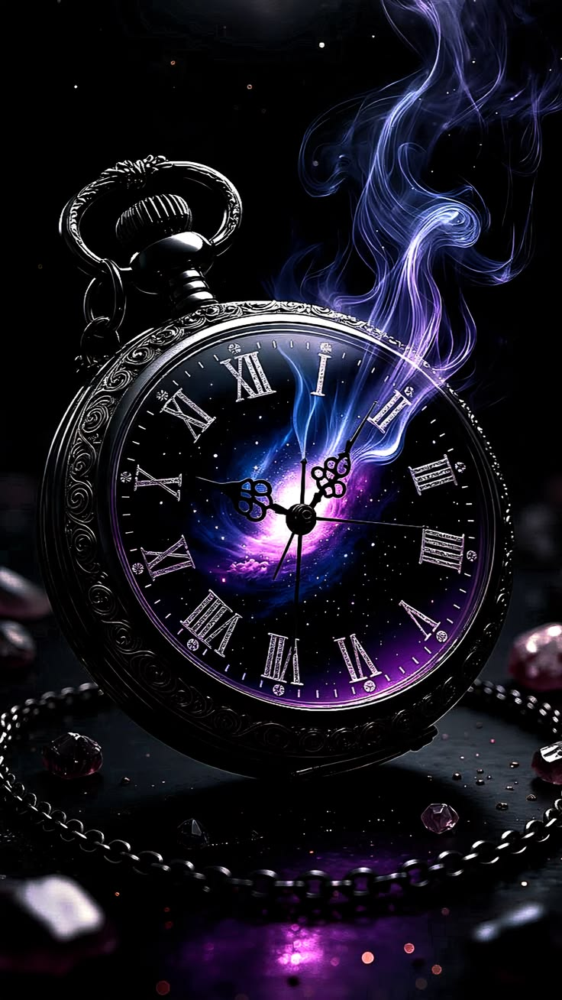

A forgotten memory rises from the shadows. Something from your past still carries emotional weight and seeks your attention. This card suggests an unfinished lesson or buried truth that continues to shape your choices today.
Back to Cards